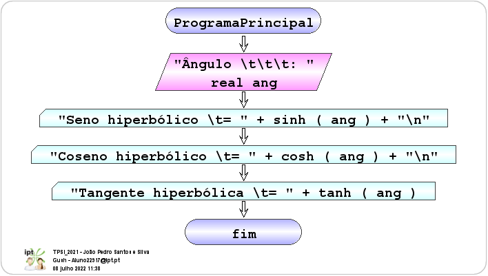

| Fluxograma | Pseudocódigo |
|---|---|
|  | inicio ProgramaPrincipal
ler real ang "Ângulo \t\t\t: "
escrever "Seno hiperbólico \t= " + sinh(ang) + "\n"
escrever "Coseno hiperbólico \t= " + cosh(ang) + "\n"
escrever "Tangente hiperbólica \t= " + tanh(ang)
fim ProgramaPrincipal
|